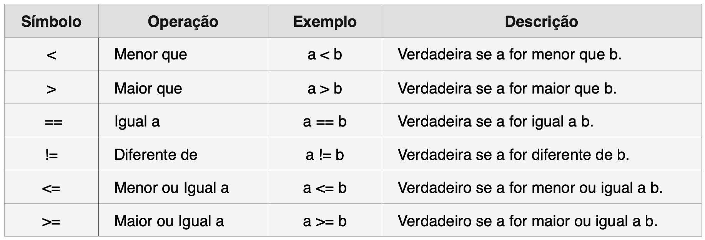
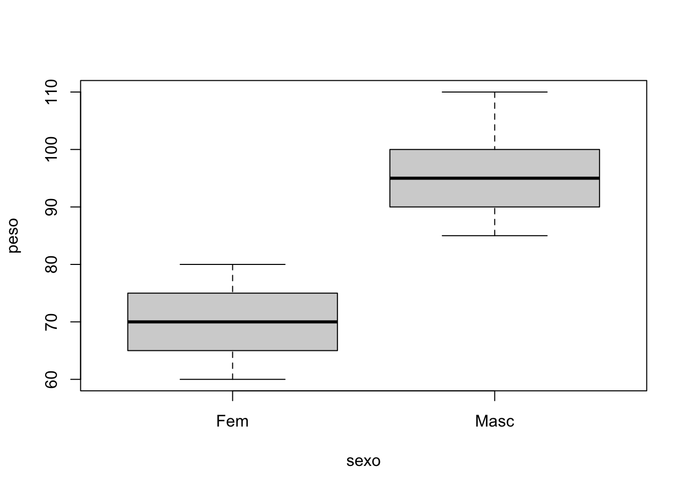

4*3+2[1] 14Operadores são os elementos que indicam uma ação, uma operação, a ser realizada. Toda linguagem científica necessita de operações aritméticas (tais como somar e subtrair), operações lógicas (verificar se duas variáveis são iguais ou não), operações de atribuição (atribuir um valor a uma variável) etc.
Os operadores mais comuns do R são os aritméticos:
+ soma
- subtração
* multiplicação
/ divisão
^ potência
Veja nos exemplos abaixo algumas operações matemáticas simples:
4*3+2[1] 14O número [1] entre colchetes que aparece antes do resultado indica que o valor apresentado é o 1º da lista de resultados. Nesse caso só existe um valor, então essa informação não tem utilidade. Em alguns casos o resultado da operação é um conjunto de números, ocupando mais de uma linha, nesses casos, esse nº entre colchetes pode ter alguma utilidade.
Assim como na matemática, também no R existem regras de precedência de operações com um detalhe: os parênteses sempre tem preferência, ou precedência, sendo usados para colocarmos as operações na ordem desejada. ou seja, as operações entre parênteses tem prioridade sobre outras operações. Veja o exemplo abaixo
(4*3) + 2 [1] 144*(3 + 2) [1] 20<-Muitos dos símbolos usualmente usados na matemática são denominados operadores. Na matemática os símbolos +, -, *, / e ^ são operadores aritméticos.
Um operador importante é o =. Esse sinal no R não significa igualdade. O símbolo de igual = é chamado de operador de designação ou de atribuição, e serve para copiar uma constante, um literal, um resultado de expressão ou um resultado de função para uma variável.
Na linguagem R é mais comum usarmos um outro operador de atribuição: <- justamente para não causar confusão com a igualdade.
O operador de atribuição serve para atribuirmos um dado a um objeto e tem a forma de uma seta para esquerda, formada pelo sinal de menor imediatamente seguida do sinal de menos
<-.
Isso forma uma seta, indicando que o resultado da operação será colocado no objeto à esquerda da seta.
x <- 2
y <- 3
z <- (x+y)^2
z <- "Maria" Observe que ao criar uma variável para armazenar uma palavra ou um caractere, é necessário colocar essa palavra entre aspas. O R entende que está entre aspas é uma palavra ou um texto e não um número.
Operadores de comparação, ou relacionais, realizam ações de verificação da relação entre dois objetos, comparando se são iguais, diferentes, maiores ou menores. O resultado de uma operação dessas é sempre uma variável lógica (TRUE ou FALSE). Esse resultado é armazenado em variáveis chamadas de booleanas ou lógicas.

Perceba que o operador de igualdade é o == e não o =. O simbolo = é o operador de atribuição e não de igualdade. É frequente a confusão entre entre esses operadores. Devido a isso, no R é usual utilizarmos o <-como o operador de atribuição.
Veja nos códigos abaixo exemplos do uso dos operadores relacionais. Perceba que o resultado é sempre uma variável lógica (TRUE ou FALSE).
4 < 5[1] TRUE3 == 3[1] TRUEa <- 3^2
b <- 3*3
a > b[1] FALSEa < b[1] FALSEa == b[1] TRUEOperadores relacionais comparam dois objetos. Quando precisamos realizar mais de uma comparação ao mesmo tempo, precisamos usar os operadores lógicos. No R, os principais operadores lógicos são, & e | , que significam, respectivamente, AND e OR. O resultado de comparações múltiplas terá também como resultado uma variável lógica (TRUE ou FALSE).
Veja abaixo alguns exemplos.
A <- 30
B <- 20
C <- 10
# testaremos abaixo se A é, ao mesmo tempo, maior que B e C
# o resultado só será TRUE se A for maior que ambos
(A > B) & (A > C)[1] TRUE# testaremos agora se B é maior que um dos outros dois A ou C
# basta B ser maior que qualquer um dos outros para o resultado ser TRUE
(B > A) | (B > C)[1] TRUE$O operador $ é usado para acessarmos as colunas de um data frame e extrairmos os valores dessa coluna. Vamos criar um pequeno data frame para exemplo:
nome <- c("Henrique", "Antônio", "Fabiano")
idade <- c(45, 40, 48)
staff <- data.frame(nome, idade) Para extrairmos os valores da variábel nessa coluna com as idades basta usarmos staff$idade, como abaixo:
staff$idade [1] 45 40 48Veja que o comando formado por A$B extrai os dados armazenados na variável B do data frame A.
Usamos esse operador $ para realizar qualquer cálculo estatístico nos valores armazenados em uma variável de um data frame. Por exemplo, para calcular a média das idades dos pacientes no data frame acima basta usar a função mean(), colocando mydf$idade como argumento da função, como abaixo:
# calcula a média da variável idade no data frame staff
mean(staff$idade)[1] 44.33333# calcula a mediana da variável idade no data frame staff
median(staff$idade)[1] 45# calcula o desvio padrão da variável idade no data frame staff
sd(staff$idade)[1] 4.041452:O operador de sequência : é um dos operadores mais fundamentais e frequentemente utilizados no R. Ele permite criar sequências de números inteiros de forma rápida e eficiente, facilitando a geração de vetores numerados em intervalos regulares. A simplicidade e a utilidade deste operador fazem dele uma ferramenta essencial para qualquer pessoa que esteja trabalhando com a linguagem R.
A sintaxe básica do operador de sequência é extremamente simples:
início:fim
O operador : cria uma sequência de números inteiros que começa em início e termina em fim, incluindo ambos os extremos. Por exemplo:
# Criando uma sequência de 1 a 10
x <- 1:10
x [1] 1 2 3 4 5 6 7 8 9 10Podemos criar sequencias decrescentes
x <- 100:90
x [1] 100 99 98 97 96 95 94 93 92 91 90Podemos criar sequencias combinadas com o uso da função de concatenação c(), tal como mostrado a seguir:
# Combinando duas sequências
c(1:5, 10:15, 20:25) [1] 1 2 3 4 5 10 11 12 13 14 15 20 21 22 23 24 25O operador de sequência : é muito eficiente para criar sequências simples de números inteiros. No entanto, para sequências mais complexas ou não lineares, a função seq() pode ser mais apropriada. Além disso, é importante lembrar que o operador : sempre gera sequências de inteiros; para sequências de números não inteiros ou com passos diferentes de 1, a função seq() deve ser utilizada.
~O operador ~ é utilizado para expressar a relação entre variáveis, indicando a dependência de uma variável resposta em relação a uma ou mais variáveis preditoras. Ele é amplamente utilizado na criação de fórmulas, que são objetos da classe formula no R.
A sintaxe básica do operador ~ é: resposta ~ preditores, Onde resposta é a variável dependente e preditores são as variáveis independentes. É possível haver mais de uma variável preditora. Nesse caso as variáveis preditoras são agregadas com o operador +. Por exemplo: resposta ~ preditor1 + preditor2 + preditor3.
Suponha que temos um conjunto de dados sobre o peso e a altura de indivíduos e queremos criar um modelo que descreva o peso em função da altura. Podemos criar um objeto da classe fórmula simplesmente escrevendo peso ~ altura. Observe que os objetos da classe fórmula não são avaliados numericamente, a não ser quando são inseridos em alguma função.
Esse é justamente o poder das fórmulas no R, permitem capturar os relações entre variáveis sem avaliá-las para que possam ser interpretadas por alguma função.
# Dados de exemplo
meus_dados <- data.frame(peso = c(60, 65, 70, 75, 80, 85, 90, 95, 100, 110),
altura = c(1.55, 1.60, 1.65, 1.70, 1.75, 1.80, 1.85, 1.90, 1.95, 2.00),
sexo = c("Fem", "Fem", "Fem", "Fem", "Fem", "Masc", "Masc", "Masc", "Masc", "Masc"))
# Fórmula para a regressão linear
minha_formula <- peso ~ altura
str(minha_formula)Class 'formula' language peso ~ altura
..- attr(*, ".Environment")=<environment: R_GlobalEnv> Este código cria uma fórmula que representa a relação entre peso e altura. A fórmula peso ~ altura é um objeto da classe formula.
Podemos inserir fórmulas como argumentos de funções. Por exemplo, na construção de um boxplot comparativo: boxplot(y~x, dataframe).
O código acima pode ser traduzido da seguinte forma: faça um boxplot da distribuição da variável numérica y estratificando de acordo com a variável categórica x, a partir dos dados do data frame indicado. Podemos fazer isso usando os dados criado no código acima.
# usando os dados criados na etapa anterior:
boxplot(peso~sexo,data=meus_dados)
Uma das aplicações mais comuns do operador ~ é na construção de modelos estatísticos. Vamos ajustar um modelo de regressão linear simples usando os dados de exemplo acima. Veja que a fórmula é um dos argumentos da função lm() que significa Linear Model. A função lm() utiliza a fórmula peso ~ altura como argumento para definir o modelo.
# Ajuste do modelo de regressão linear
modelo <- lm(peso ~ altura, data = meus_dados)
# Resumo do modelo
summary(modelo)
Call:
lm(formula = peso ~ altura, data = meus_dados)
Residuals:
Min 1Q Median 3Q Max
-1.4545 -0.8409 -0.2273 0.3864 3.2727
Coefficients:
Estimate Std. Error t value Pr(>|t|)
(Intercept) -104.182 5.608 -18.58 7.27e-08 ***
altura 105.455 3.149 33.49 6.91e-10 ***
---
Signif. codes: 0 '***' 0.001 '**' 0.01 '*' 0.05 '.' 0.1 ' ' 1
Residual standard error: 1.43 on 8 degrees of freedom
Multiple R-squared: 0.9929, Adjusted R-squared: 0.992
F-statistic: 1121 on 1 and 8 DF, p-value: 6.905e-10|>Pipe, na língua inglesa, significa tubo ou tubulação. Na computação pipe é uma forma de simplificar uma série de comandos em sequência. O nome desse operador tem a ver com o fato de criar uma sequencia de ações, encaminhando os resultados de uma função para a próxima função como se estivessem sendo carregados por um tubo. Esse operador faz parte do pacote magrittr e é automaticamente instalado juntamente com o tidyverse. A partir da versão 4.1, o R passou a ter um operador pipe próprio, sem a necessidade de novos pacotes. Ambos tem funções similares e se comportam de forma parecida, com alguns detalhes diferentes. Esses operadores usam simbolos diferentes, mas funcionam de forma parecida e não entraremos em detalhes das sutis diferenças entre eles.
Operador pipe do pacote magritte: %>%
Operador pipe do R (4.1 e acima): |>
Veja um exemplo. Suponha que dado um vetor, você precise calcular a média dos valores, depois extrair a raiz quadrada desse valor e, em seguida, arredondar o valor para 2 casas decimais.
Podemos fazer isso de três formas:
Vejamos como isso seria feito e quais as deficiências das duas primeiras abordagens.
Criando um vetor numérico x
x <- c(0,11,222,333,44,55,66,77,88,99,100,110)1º modo: Usando códigos aninhados entre parênteses, fazendo toda a operação de uma só vez.
round(sqrt(mean(x)),2)[1] 10.02Essa forma de fazer as operações não é nada elegante. O código fica difícil de ser lido e de ser compreendido. Erros são comuns e corrigi-los é ainda mais difícil. Um modo alternativo é fazer cada operação de uma vez, armazenado o resultado em variáveis intermediárias em cada etapa
2º modo: Fazendo cada operação separadamente, usando variáveis intermediárias
Calcule a média dos valores de x e armazenando o resultado em x2
x2 <- mean(x)
x2[1] 100.4167Calcule a média dos valores de x2 e armazenando o resultado em x3
x3 <- sqrt(x2)
x3[1] 10.02081arredonde o valor de x3 para 2 casas decimais depois da vírgula
round(x3, 2)[1] 10.02Esse modo de realizar essa sequencia de operações é mais fácil de ser compreendido, já que cada etapa do processo é feita separadamente. Entretanto, tem o inconveniente de ser necessário a criação de diversas variáveis intermediárias, o que polui desnecessáriamente o ambiente de trabalho.
3º modo: Usando o operador pipe %>%
Veja agora como fazer essas operações de forma elegante com o operador pipe.
# usando o pipe do pacote magritte
library(magrittr)
x %>% mean() %>% sqrt() %>% round(2)[1] 10.02# usando o pipe do R
x |> mean() |> sqrt() |> round(2)[1] 10.02O código acima pode ser lido da seguinte maneira:
x,Veja como é muito mais natural e mais fácil compreender esse código. O que o operador pipe fez foi enviar o resultado de cada operação para a operação seguinte, como se estivesse passando por um tubo.
O operador pipe pode ser colocado em diversas linhas para facilitar ainda mais a visualização e compreensão da sequencia de códigos. Essa é o estilo adequado de se usar o operador pipe.
# usando o pipe do pacote magritte
x %>%
mean() %>%
sqrt() %>%
round(2)[1] 10.02# usando o pipe do R
x |>
mean() |>
sqrt() |>
round(2)[1] 10.02Vamos ver como funciona o operador pipe em data frames usando como um exemplo o dataset mpg do pacote ggplot2.
Imagine que você precisa extrair a média da quilometragem percorrida na estrada, por carros da marca Ford com tração nas 4 rodas, arredondando o resultado para 2 casas decimais depois da vírgula. Não se preocupe em entender as funções filter(), select() e pull(). Essas funções serão explicadas no capítulo sobre o tidyverse. O objetivo agora é apenas entender como usar o operador pipe %>%.
Sem o uso do operador pipe o código poderia ser feita de duas formas: criando datasets intermediários em cada etapa ou aninhando as operações em parênteses.
Modo 1: Usando comandos aninhados um dentro do outro com parênteses.
library(ggplot2) # necessário para usar o dataset mpg
library(dplyr) # necessário para usar as funções filter() e select()
# carregando o dataset mpg
data(mpg)
# Executando a operação
round(mean(filter(mpg, manufacturer == "ford" & drv == "4")$hwy) ,2)[1] 17.15Veja como o código fica confuso, difícil de ser lido por seres humanos normais.
Modo 2: Usando datasets intermediários.
# Extrai do data frame mpg os carros da ford com tração nas 4 rodas e cria um novo data frame com esse resultado
ford4x4 <- filter(mpg, manufacturer == "ford" & drv == "4")# extrai a média dos valores da km percorrida na estrada e coloca esse resultado numa nova variável
media.estrada <- mean(ford4x4$hwy)# arredondando o resultado com 2 casas decimais depois da vírgula e coloca esse resultado numa nova variável
media.arredondada <- round(media.estrada, 2)# mostra o resultado
media.arredondada[1] 17.15O código acima pode até ser fácil de ler, entretanto, ficou muito grande, ocupando muitas linhas e criando variáveis intermediárias em excesso. O operador pipe também facilita muito trabalhar com data frames. Veja a seguir como podemos simplificar esse código com o pipe:
mpg %>%
filter(manufacturer == "ford" & drv == "4") %>%
select(hwy) %>%
pull() %>%
mean() %>%
round(2)[1] 17.15mpg |>
filter(manufacturer == "ford" & drv == "4") |>
select(hwy) |>
pull() |>
mean() |>
round(2)[1] 17.15O código acima pode ser lido da seguinte maneira:
Depois de um certo tempo você irá se acostumar com o operador pipe e perceberá o quanto ele é útil, pois as operações são colocadas numa sequência bem mais compreensível.
O operador pipe do R tem algumas vantagens. Em primeiro lugar, não depende de nenhum pacote; sem segundo lugar, é mais curto para se digitar; em terceiro lugar, é mais rápido.